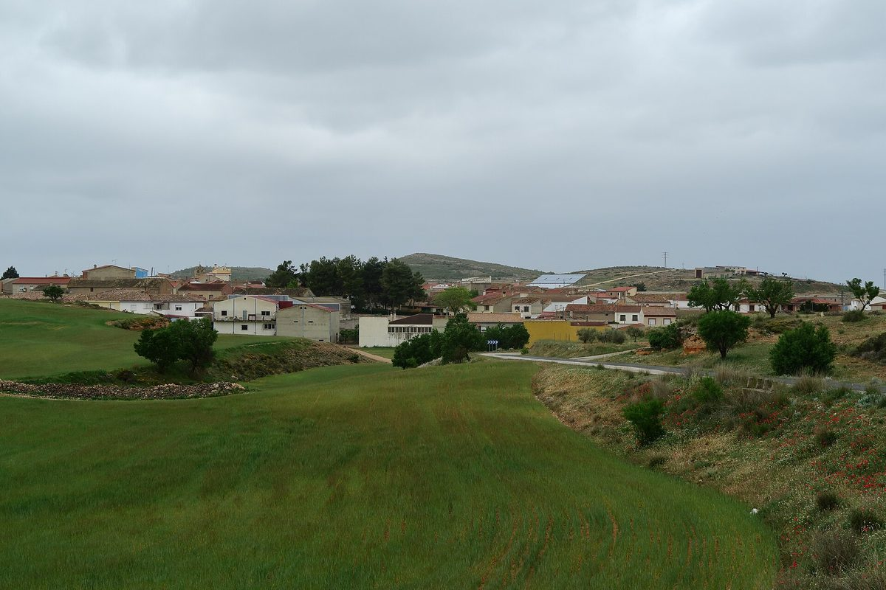

스페인 알바세테 작은 마을 3곳, 에너지 공동체 공증 설립…마을 부지에 공동 자가소비 설비 추진

아이나·레수사·비야발리엔테, 주민·상점·기관이 초기 투자 없이 참여하는 구조 내세워…마을별 수요 분석해 1단계 설비 규모 정하기로
스페인 카스티야라만차주 알바세테 도의 작은 마을 아이나(Aýna)·레수사(Lezuza)·비야발리엔테(Villavaliente)가 각각 에너지 공동체(comunidad energética)를 공증인 앞에서 설립했다. 세 공동체는 마을 소유 부지에 재생에너지 공동 자가소비 설비를 두고 주민·상점·기업·지역 기관이 가까운 곳에서 만든 전기를 함께 써 전기요금을 낮추는 것을 목표로 하며, 지원 회사 측은 참여자가 초기 투자 없이 절감 효과를 누리도록 설계했다고 설명했다. 아직 설비는 없으며, 설립을 마친 공동체들은 이제 마을별 에너지 수요를 분석하고 1단계 설비 규모를 정하는 기술 단계에 들어간다. 법률·기술·행정 지원은 CEL Management와 CE Manchegas가 맡았으며, 지원 측은 설립과 계획에서 시공·가동까지 모든 단계를 함께해야 사업이 실제 성과로 이어진다고 강조했다. 지원 측은 이웃 시우다드레알 도의 여러 마을에서 이미 에너지 공동체 설비가 가동 중이라며 이 모델을 알바세테의 더 많은 마을로 넓히겠다는 뜻을 밝혔다. 참여 가구 수와 설비 용량, 절감률, 사업비와 가동 시기는 공개되지 않았다.
시민에너지 관점
설비보다 법인을 먼저 세우고 그다음 마을별 수요를 재서 1단계 규모를 정하는 순서는 작은 마을 에너지 사업이 어디서부터 시작해야 하는지 보여 준다. 인구가 적은 마을은 사업성이 없다는 우려가 있지만, 마을 소유 부지를 쓰고 마을마다 공동체를 따로 두면 규모가 작아도 결정권은 마을에 남는다. 다만 '초기 투자 없이'가 누구의 돈으로 설비를 짓는다는 뜻인지 아직 드러나지 않았듯, 주민이 한 몫이라도 출자하지 않으면 공동체라는 이름과 실제 소유가 갈라질 수 있다. 국내 농촌 마을도 공공 부지와 전문 조직의 동행을 바탕으로, 주민이 작게라도 출자해 함께 소유하는 공동체를 먼저 세우는 데서 출발해야 한다.
출처: Onda Cero Albacete 2026-10-30 Onda Cero Albacete 원문 보기
スペイン・アルバセテの小さな3村、エネルギー共同体を公証設立…村有地に共同自家消費設備を計画
アイナ・レスサ・ビジャバリエンテ、住民・商店・機関が初期投資なしで参加する仕組みを掲げる…村ごとの需要を分析し第1段階の設備規模を決定へ
スペイン・カスティーリャ＝ラ・マンチャ州アルバセテ県の小さな村、アイナ（Aýna）、レスサ（Lezuza）、ビジャバリエンテ（Villavaliente）が、それぞれエネルギー共同体（comunidad energética）を公証人の前で設立した。3つの共同体は村有地に再生可能エネルギーの共同自家消費設備を置き、住民・商店・企業・地域の機関が近くで作られた電気を共に使って電気料金を下げることを目指しており、支援会社側は参加者が初期投資なしで節約効果を得られるよう設計したと説明した。設備はまだなく、設立を終えた共同体はこれから村ごとのエネルギー需要を分析し、第1段階の設備規模を決める技術段階に入る。法務・技術・行政の支援はCEL ManagementとCE Manchegasが担い、支援側は設立・計画から施工・稼働まですべての段階に寄り添ってこそ事業が実際の成果につながると強調した。支援側は隣のシウダー・レアル県の多くの村で既にエネルギー共同体の設備が稼働しているとして、このモデルをアルバセテのより多くの村に広げたい考えを示した。参加世帯数や設備容量、節約率、事業費、稼働時期は明らかにされていない。
市民エネルギーの視点
設備より先に法人をつくり、その後で村ごとの需要を測って第1段階の規模を決める順序は、小さな村のエネルギー事業がどこから始めるべきかを示している。人口の少ない村では採算が合わないとの懸念もあるが、村有地を使い、村ごとに共同体を置けば、規模が小さくても決定権は村に残る。ただ「初期投資なし」が誰のお金で設備を建てるという意味なのかがまだ見えないように、住民が一口でも出資しなければ、共同体という名前と実際の所有が離れてしまうおそれがある。韓国の農村も、公共用地と専門組織の伴走を土台に、住民が小さくても出資して共に所有する共同体をまず立ち上げるところから出発すべきだ。
出典: オンダ・セロ・アルバセテ 2026-10-30 オンダ・セロ・アルバセテ 原文を読む
西班牙阿尔瓦塞特3个小村经公证成立能源社区…计划在村有土地上建共同自用设施
艾纳、莱苏萨、比利亚巴连特主打居民、商店和机构无需初期投资即可参与…将分析各村需求、确定第一阶段设施规模
西班牙卡斯蒂利亚-拉曼恰自治区阿尔瓦塞特省的小村庄艾纳（Aýna）、莱苏萨（Lezuza）和比利亚巴连特（Villavaliente）分别在公证人面前成立了各自的能源社区（comunidad energética）。三个社区计划在村有土地上设置可再生能源共同自用设施，让居民、商店、企业和地方机构共同使用就近生产的电力、降低电费；支援企业方面表示，这一模式的设计让参与者无需初期投资即可享受节省。目前设施尚未建成，完成设立的社区接下来将进入技术阶段，分析各村能源需求并确定第一阶段设施规模。法律、技术和行政支援由CEL Management和CE Manchegas负责，支援方强调，从设立、规划到施工和投运的每个阶段都需陪伴，项目才能取得实际成果。支援方指出，邻近的雷阿尔城省已有多个村庄的能源社区设施投入运行，并表示希望把这一模式推广到阿尔瓦塞特更多村庄。参与户数、装机容量、节省比例、项目费用和投运时间均未公开。
市民能源视角
先成立法人，再测算各村需求、确定第一阶段规模，这一顺序说明了小村庄的能源事业应从哪里起步。有人担心人口少的村庄缺乏经济性，但利用村有土地、每个村各设一个社区，规模再小，决定权也留在村里。不过，正如"无需初期投资"究竟意味着用谁的钱建设施尚不清楚，如果居民不出一份资，社区的名义与实际所有权就可能分离。韩国农村也应以公共用地和专业组织的陪伴为基础，从居民哪怕少量出资、共同拥有的社区起步。
来源: 零度电波阿尔瓦塞特台 2026-10-30 零度电波阿尔瓦塞特台 查看原文
Three small villages in Spain's Albacete formally set up energy communities, plan shared self-consumption on municipal land
Aýna, Lezuza and Villavaliente promise residents, shops and local bodies savings with no upfront investment; next step is to study each village's demand and size a first phase
Three small villages in the province of Albacete in Castilla-La Mancha, Spain — Aýna, Lezuza and Villavaliente — have each formally constituted an energy community (comunidad energética) before a notary. The communities aim to place shared renewable self-consumption installations on municipally owned sites so that residents, shops, businesses and local bodies can use locally generated electricity together and cut their power bills, and the supporting companies say the model is designed to let participants save without making an upfront investment. No installations exist yet; having been set up, the communities now enter a technical phase to analyse each village's energy needs and size a first phase of installations. Legal, technical and administrative support comes from CEL Management and CE Manchegas, which stress that projects need support at every stage, from constitution and planning to construction and start-up, to deliver real results. The supporters point out that many villages in neighbouring Ciudad Real province already have energy community installations running, and say they hope to extend the model to more villages in Albacete. The number of participating households, installed capacity, expected savings, project cost and start date have not been disclosed.
Citizen Energy View
Setting up the legal entity first, then measuring each village's demand and sizing a first phase, shows where a small-village energy project should start. Some worry that villages with few people cannot make projects pay, but using municipal land and giving each village its own community keeps decision-making in the village even when the scale is small. Yet just as it is not yet clear whose money "no upfront investment" relies on to build the installations, unless residents put in at least a small share, the name "community" and actual ownership can drift apart. Rural villages in Korea, too, should start by founding communities that residents co-own through even modest investments, backed by public land and the support of experienced organisations.
Source: Onda Cero Albacete 2026-10-30 Onda Cero Albacete Read the original